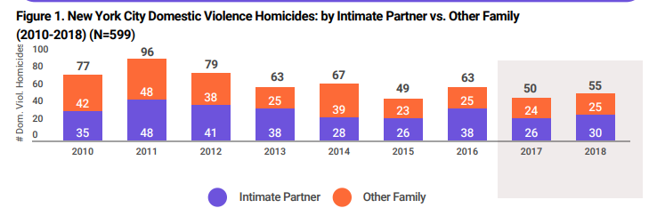
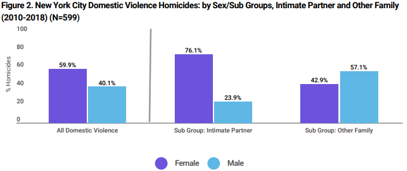
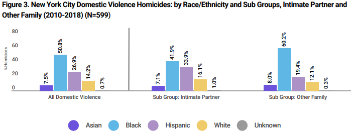
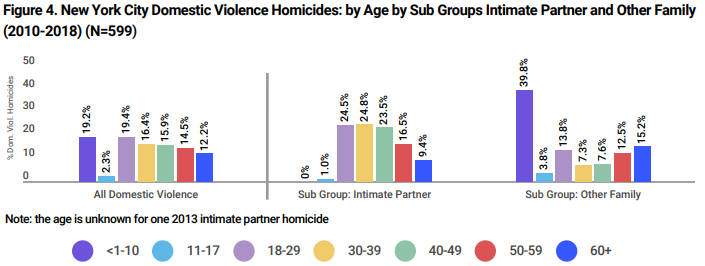

Domestic violence in the United States is a form of violence that occurs within a domestic relationship. It may also describe other household violence, such as violence against a child, by a child against a parent or violence between siblings in the same household. It is recognized as an important social problem by governmental and non-governmental agencies, and various Violence Against Women Acts have been passed by the US Congress in an attempt to stem this tide.
The goal of this website is to educate you in the tragedys of Domestic Violence and why you should spread awareness.

Domestic violence homicides increased by 10.0% - from 50 in 2017, to 55 in 2018.
Other family-related homicides increased by 4.2% - from 24 in 2017, to 25 in 2018.
Intimate partner homicides increased by 15.4% - from 26 in 2017, to 30 in 2018.

The majority (59.9%, 359 of 599) of domestic violence homicide victims are female.
More than 3 out of 4 (76.1%, 236 of 310) intimate partner homicide victims are female
Males account for a higher percentage (57.1%, 165 of 289) of other family homicide victims
compared to intimate partner homicide victims (23.9%, 74 of 310).
Here are some statistics:

Black individuals account for 50.8% (304 of 599) domestic violence homicides, 41.9% (130 of 310) of
intimate partner homicides, and 60.2% (174 of 289) of homicides involving other family members.
Hispanic individuals account for 26.9% (161 of 599) of domestic violence homicides, 33.9% (105 of
310) of intimate partner homicides, and 19.4% (56 of 289) of homicides involving other family
members.

Almost 1 out of every 5 (19.2%,115 of 599) domestic violence homicides involve a child age 10 and
under. 2 out of every 5 (39.8%, 115 of 289) other family homicides involve a child age 10 and under
1 out of every 4 (26.7%, 160 of 599) domestic homicides and intimate partner homicides (25.9%, 80
of 310) involve a victim age 50 and over.
The number of intimate partner homicide victims was similar in the 18-29, 30-39 and 40-49 year age
categories.
The average age of the victims was 40 years, and the median age was 39 years